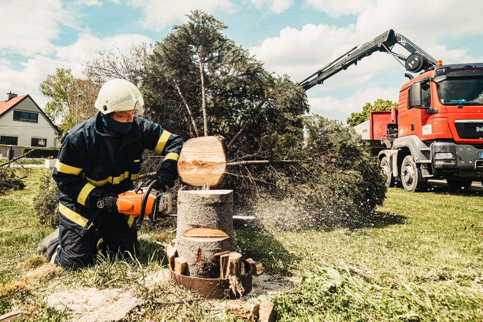

If you have spent any time searching "tree removal Winnipeg Reddit," you already know the r/Winnipeg and r/Manitoba threads are full of mixed advice. Some posts are genuinely helpful; others are outdated, based on a single experience, or written by someone who clearly hired a crew that cut corners. This guide pulls together what those threads get right, fills in the gaps, and walks you through exactly what a legitimate, professional tree removal job looks like from your first phone call to the moment your yard is clean. Whether you are dealing with a storm-damaged elm in River Heights, a dying ash in St. Vital, or an overgrown spruce crowding your fence line in Transcona, understanding the process helps you ask the right questions and avoid getting burned.

Why Winnipeg Homeowners Turn to Reddit First
It makes sense. Winnipeg winters are brutal, and by the time spring arrives and a homeowner notices a tree has not leafed out, they want real opinions from neighbours, not a sales pitch. Reddit threads on this topic tend to cluster around three questions: How much does it cost? Do I need a permit? And how do I know if a company is legitimate? All three are fair questions, and the answers matter more here than in a city with a milder climate, because our freeze-thaw cycles, heavy wet snow loads, and elm beetle pressure create tree problems that are genuinely local.
Step 1: Assessment and Quote
A reputable Winnipeg arborist will visit your property before quoting, not just look at a photo. During the assessment they check tree height, trunk diameter, proximity to your house, power lines, fences, and neighbouring properties, and they look for signs of rot, disease, or structural weakness. Be cautious of any company that quotes a flat price over the phone without seeing the tree. Reddit users frequently warn about this, and it is one of the more reliable pieces of advice in those threads.
When comparing quotes, make sure each one includes stump grinding, debris removal, and cleanup. These are sometimes quoted separately, which can make an initially low number look competitive when it is not.
Step 2: Permits and Bylaws
Private yard trees generally do not require a permit in most Winnipeg residential situations, but rules can change and there are exceptions, particularly in heritage neighbourhoods or if the tree is unusually large. The safest approach is always to verify with the City rather than rely on what someone said in a Reddit thread from two years ago.
Step 3: Dutch Elm Disease Considerations
This is where Winnipeg tree removal is genuinely different from most other cities. American elm trees are a defining feature of older Winnipeg neighbourhoods like Wolseley, Armstrong's Point, and the West End, and Dutch Elm Disease (DED) is an ongoing threat. If your elm is showing signs of DED, there are strict provincial rules about when and how it must be removed and disposed of to prevent the spread of the beetle that carries the fungus.
Step 4: The Day of Removal
Here is what a professional job actually looks like on the ground, which is useful context when reading Reddit accounts that range from "they were done in an hour" to "it took all day and they left a mess."
- Site setup: The crew marks the drop zone, lays protective ground cover if needed, and cones off the work area. If there are vehicles or fences nearby, a good crew will discuss protection with you first.
- Rigging and sectional removal: For trees near structures, climbers section the tree from the top down, lowering large limbs with ropes rather than dropping them. This is standard practice in tighter Winnipeg yards.
- Felling (open areas): If there is clear space, the trunk may be felled in one or two pieces for efficiency.
- Chipping: Branches are fed through a chipper on site. Most crews will leave the chips if you want them for garden beds, or haul everything away.
- Stump grinding: A stump grinder chews the stump down below grade, typically 6 to 12 inches deep. The ground will be left with a mound of wood chips and loose soil that will settle over a few weeks.
- Final cleanup: Sawdust is raked up, the lawn is blown or raked clear, and the crew walks the yard with you before leaving.
How Long Does It Take?
Job length depends on tree size and complexity. A straightforward removal of a medium-sized tree in a Winnipeg backyard typically takes two to four hours. A large, diseased elm or a multi-stem spruce close to a house might take a full day. Reddit estimates vary wildly because people are describing very different scenarios.
Typical Cost Ranges in Winnipeg
| Tree Size / Situation | Approximate Cost Range |
|---|---|
| Small tree (under 20 ft), open yard | $300 – $600 |
| Medium tree (20–40 ft), standard removal | $600 – $1,200 |
| Large tree (40+ ft) or near structure | $1,200 – $2,500+ |
| Stump grinding (if quoted separately) | $100 – $300 per stump |
| Emergency / storm damage removal | Premium rates apply |
These are general Winnipeg market ranges based on current local conditions and are not guarantees. Get at least two or three quotes and compare what is included in each.
What to Look for in a Winnipeg Tree Removal Company
Reddit threads consistently flag the same red flags: no insurance, no in-person quote, pressure to pay cash up front, and no written contract. For professional tree removal services in Winnipeg, look for companies that carry liability insurance and WorkSafe Manitoba coverage, are willing to show credentials, and provide a written scope of work before a single cut is made.
If the removal is happening near your fence line, it is also worth noting that significant tree work can sometimes disturb fence posts, especially in our clay-heavy Winnipeg soil. Discussing this with your crew in advance avoids disputes afterward. Companies that also offer services like Fence Installation Winnipeg can be a practical option if your fence needs attention once the tree is gone.
Ready to Get a Straight Answer on Your Winnipeg Tree Removal?
Skip the Reddit thread rabbit hole and get a transparent, no-pressure quote from a local Winnipeg crew who will walk your yard before giving you a number.
Get My Free Quote